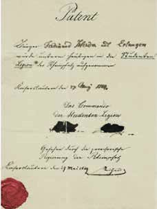
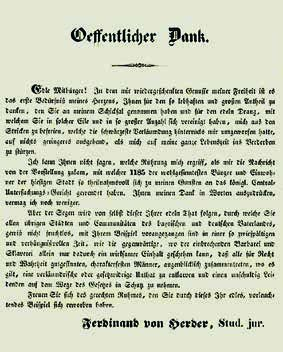
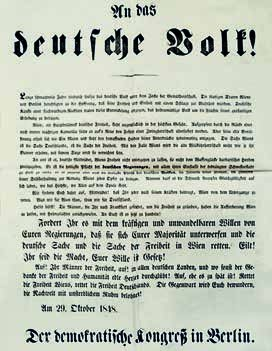

I. Die Zeit vor der Gründerfamilie · Kapitel 5
Exkurs zu Ferdinand von Herder
Ferdinand Gottfried Theobald Maximilian von Herder und Ehefrau Barbara geb, Böhm
Studentenpatent von Ferdinand von Herder
Exkurs zu Ferdinand
von Herder
Ferdinand Gottfried Theobald Maximilian von Herder war kein Vorfahre der Familie Böhm. Er hatte die Tochter eines Onkels von Friedrich Böhm geheiratet. Es ist nicht bekannt welche Kontakte zu Friedrich Böhm bestanden. Da er den klangvollen Namen des Dichters der Klassik trug, geriet er in den Blickpunkt der Verwandschaft. Teile seines Vermächtnisses befinden sich heute im Besitz von Marcus Böhm in Starnberg. Darunter befinden sich Zeichnungen und ein Ölbild mit dem Zug auf die Maxburg. (Dirk Hoch hat alle Unterlagen kopiert und im Speyerer Museum hinterlegt).
Er wurde 1828 als Enkel des Dichters Johann Gottfried von Herder und Sohn des königlich bayerischen Forstbeamten Emil Ernst von Herder und der Tochter des Schriftstellers Ludwig Ferdinand Huber als viertes von 5 Kindern in Bayreuth geboren. 1846 Studium Heidelberg und Erlangen. Es folgten demokratische Aktivitäten, unter anderem Beteiligung an der badischen Revolution. 1849 wurde er Mitglied der pfälzischen Studentenlegion. Er war Vorsitzender des Politischen Vereins von Erlagen mit liberalen politischen Zielen und beteiligte sich am pfälzisch- badischen Aufstand. Er war im Auftrag der Kaiserslauterer Revolutionsregierung für die Beschlagnahmung der Kusler Rentamtskasse verantwortlich. Er flüchtete mit den Hanauer Turnern nach Baden und dann in die Schweiz. Es folgte Verhaftung in Erlangen, Verurteilung im Zweibrücken zu 2 Jahren Gefängnis, dann jedoch 1850 folgte der Freispruch im Appelationsgericht. 1852 Ablegung des juristischen Examenens in Erlangen, jedoch keine Zulassung zum Referendardienst wegen politischer Unzuverlässigkeit. Damit war seine juristische Karriere vorbei, bevor Ferdinand Herder ins Berufleben eintreten konnte.
3 Aufrufe von Ferdinand von Herder Grabstein Herders im Grünstadter Friedhof
Er wurde hierdurch zum Zweitstudium gezwungen. Von 1853 – 55 studiere er botanische Wissenschaften in Zürich. Er fand dann durch Vermittlung eines Verwandten 1856 die Anstellung am botanischen Garten in St. Petersburg. 1863 wurde er in die Akademie der Naturforscher Leopoldina aufgenommen. Er erhielt 1864 den Ehrendoktor der Universität Halle. Er wurde zum kaiserlich russischen Hofrat ernannt. Ihm wurde die Ehrenmitgliedschaft verschiedenster Organisationen angetragen. Nach einer schweren Erkrankung seiner Gemahlin Emma Maria Barbara geb. Böhm entschied er sich 1992 zur Rückkehr nach Deutschland, in die Nähe der Familie (seine Schwester Adele Kuby lebte in Freinsheim ) nach Grünstadt. Verstorben 1896 und beerdigt in Grünstadt. (Literaturhinweis: Dr. Ernst Deuerlein, Ferdinand von Herder, Erlangen; Wikipedia).


